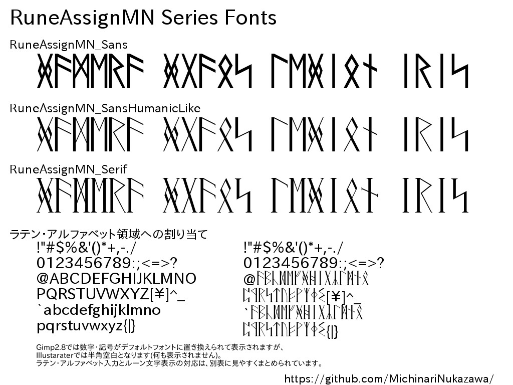
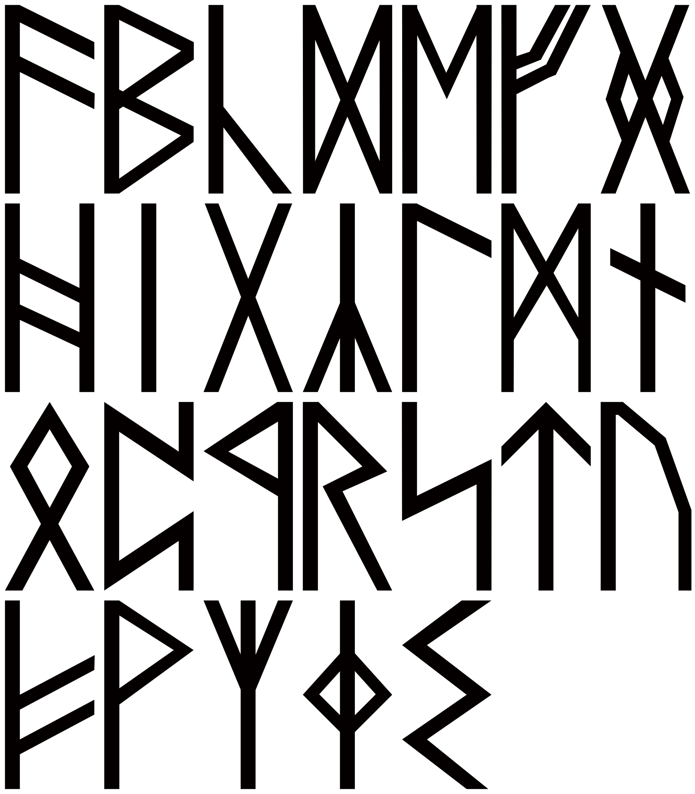
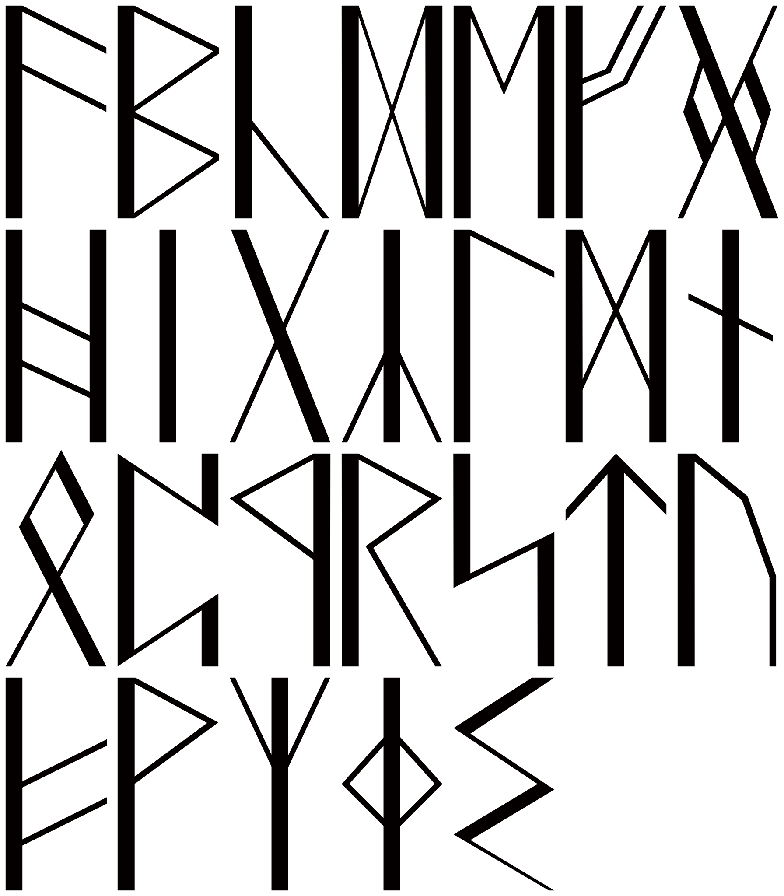
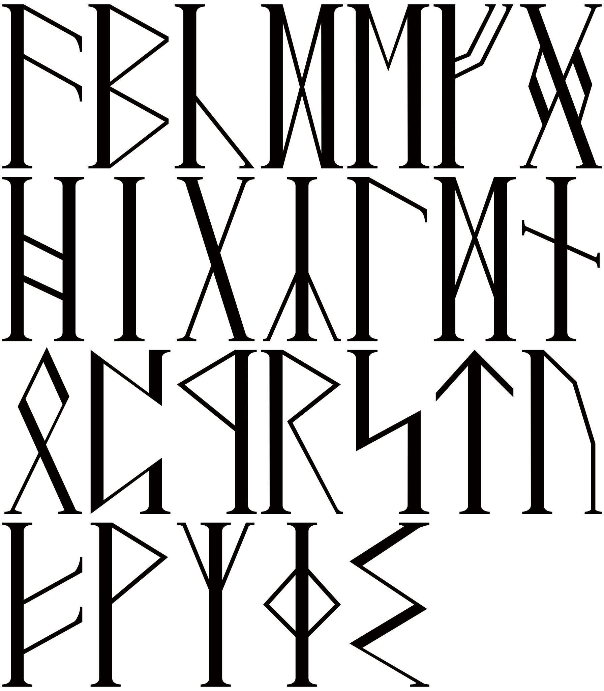
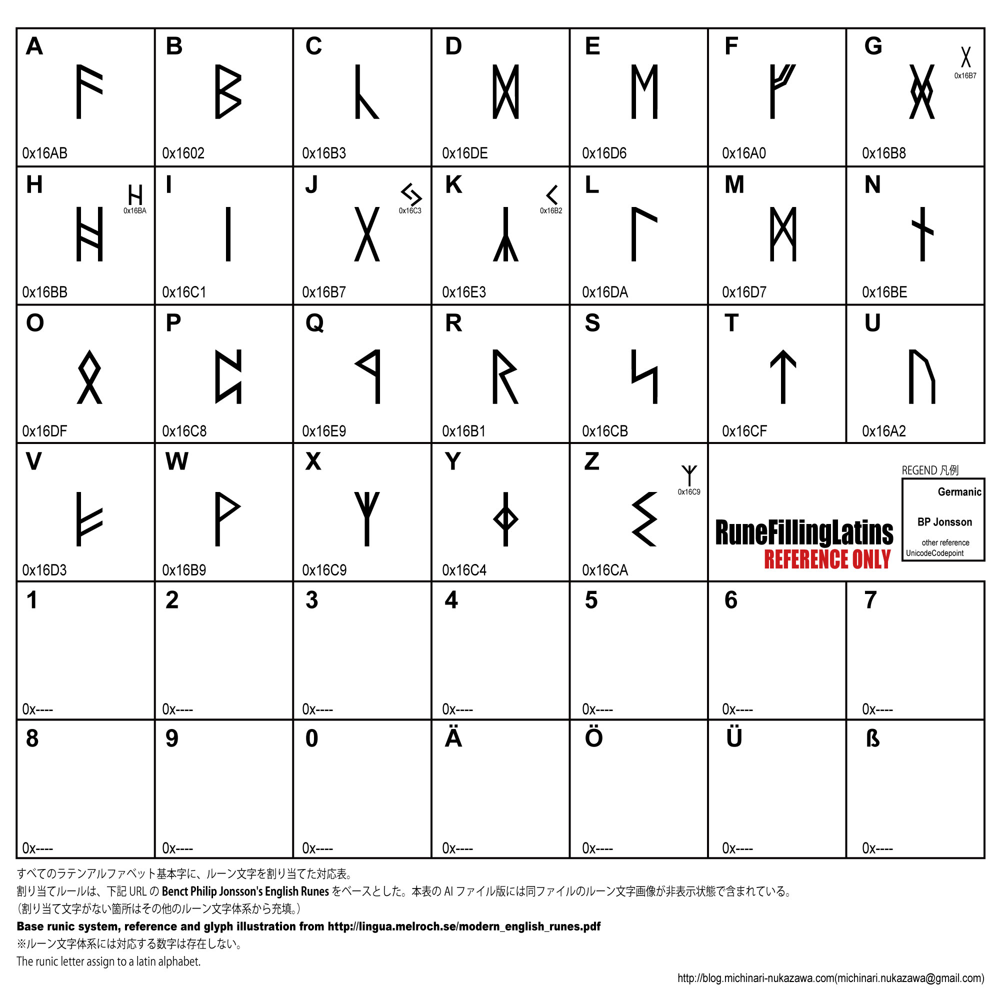

RuneAssignMN Series Fonts.
イラスト・デザイン向けルーン文字フォント
ルーン文字のフォントです。
商用可フリー素材。project daisy bellのプロダクトです。
ラテン・アルファベット(A〜z)を入力することでルーン文字を表示できるため、簡単に使うことができます。

このページはフォント形状のサンプルページです。
このフォントはフリーフォントです。商用可。
ライセンスなどの詳細は、GitHubの
RuneAssignMN_Series_Fonts プロジェクト
に置いてあるREADME.mdをご覧ください。
フォントのダウンロード
"daisy bell"公式フリーフォント シリーズ配布ページ
から、最新版をダウンロードしてください。
フォントサンプル
RuneAssignNM_Sans
スタンダードなルーン文字の形をしたサンセリフ・フォントです。

RuneAssignNM_SansHumanicLike
サンセリフ・フォントですが大小の線幅がついています。

RuneAssignNM_Serif
セリフ・フォントです。ローマン体に近い形状になっています。

ルーン文字の割り当て
ルーン文字とラテンアルファベットの対応表は、以下のとおりです。
(フォントをダウンロードした際に、この対応表が一緒に入っています。)

LICENCE:
Please read to
RuneAssignMN_Series_Fonts
/README.md
blog: blog.michinari-nukazawa.com
mail: michinari.nukazawa@gmail.com